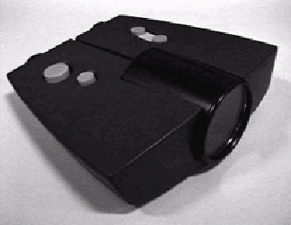
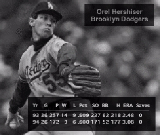

SportScope: A User-Centered Design for Baseball Fans
David S. Cortright
- Oracle Corporation*
- 500 Oracle Parkway Box 659407
- Redwood Shores, CA 94065 USA
- Tel: +1-415-506-0864
- E-mail: dcortrig@us.oracle.com
ABSTRACT
The 1995 Apple Design Project asked students to design a system that would bridge the gulf between the physical and virtual worlds. SportScope, a system which augments the user's experience at a professional baseball game, was designed for this project. A binocular-like video scope is the centerpiece of the design, enabling baseball fans to obtain up-to-the-minute information from objects within the stadium environment (such as players and billboards) using a simple point-and-shoot camera metaphor. Users provided feedback on the design at all stages of the design process and participated in prototype testing.
Keywords
User Interface Design, Consumer Product Design, Usability Testing, Hardware/Software Integration, User-Centered Design, Apple Design Project, Baseball.
THE DESIGN
SportScope was designed specifically for people attending professional baseball games. The concept behind the design is to provide up-to-the-minute statistics and additional information to spectators on demand. This information enhances the live game in a similar way that statistics and commentary enhance television sports broadcasts.

Figure 1: The final prototype model of the SportScope.
The physical device looks similar to a pair of binoculars (Figure 1); however, it uses computer, video, and wireless network1 technologies to overlay information from a centralized data server onto live video. The user interacts with the system through a simple interface of four buttons: Capture, Next, Previous, and Clear. Objects in the stadium environment, such as baseball players and billboards, are tagged with unique electronic ID transmitters2. A user can get information about any tagged object simply by viewing the object of interest through the SportScope and pressing the Capture button. A small light just below the video display gives feedback to the user that a tagged object has been targeted. The first page of the information associated with that object will then be displayed on top of the live video from the SportScope (Figure 2). The user can then navigate through all information screens of the specified object using the Next and Previous buttons. The Clear button can be pressed at any time to remove the information overlay from the display.
The World Is The Interface
Using tagged objects in the ballpark environment as interface elements is one of the cornerstones of this design. We've called this concept a HyperEnvironment because of the many characteristics that it shares with HyperText3. Here are some advantages of this interface design:
- The controls on the SportScope itself are very simple.
- The ballpark interface can be updated easily by adding or changing object tags.
- The interaction model can be grasped by users fairly quickly (as we verified during usability testing)
- Updates to the information server are instantly accessible by SportScope users.
This type of interface need not be limited to just information retrieval. We extended the functionality in this design so that users could also send information back to the server. In our implementation, users can order concession items by targeting specific billboards (e.g. Drink Coca-Cola) around the ballpark. As the user targets each billboard, a menu of the ordered items is shown on the display, and the user can submit the order by navigating to the next page (which verifies the order and asks the user to confirm) and pressing the Capture button.

Figure 2: A typical SportScope display: real-time video with statistical information overlays.
.
Social Interaction and Information Sharing
From our observations at the ballpark, we found that baseball games are often a social experience. Groups of people, such as families, use baseball games as a place to socialize and interact with each other. In an effort to promote this kind of environment, we chose the binocular model for the SportScope. Binoculars are currently used in the ballpark and are shared among group members. By leveraging off of this existing technology, we can be sure people will use and share the SportScope (and the information that it provides).
Business Model
We determined that it would be most cost-effective to rent SportScope units at the stadium rather than trying to sell them as specialized Personal Digital Assistants. One user told us, "I'd give up a hot dog and a beer for this." This was the sentiment we found from most users, who said they would be willing to rent one for $5-$10. As with most other sports products, we determined that advertising could heavily subsidize this system.
USER-CENTERED ITERATIVE DESIGN
The final SportScope is the result of several design iterations and was influenced heavily by our target users.
Initially we conducted a survey at Candlestick Park during a San Francisco Giants game to get a feel for what people currently liked or disliked about baseball games. Then we prototyped a variety of physical form factors for our device. We asked users to carry the mock-ups around and pretend they were using it. Our observations and user comments helped us choose and refine the binocular style. Finally, we conducted two rounds of usability testing on a computer mock-up (a Macromedia Director prototype running on a Macintosh computer with a Gravis GamePad as the input device). From these tests, we were able to refine the interaction model, as well as determine the kind of screen content and visual layout that users most wanted to see.
BACKGROUND
The Apple Design Project, sponsored by Apple Computer, challenges students at Universities all over the world to work in interdisciplinary teams on an HCI design project4. The 1995 Design Project centered around the theme of designing a system for a specific user group that narrows the gulf between the physical and virtual worlds. Designs were limited to technologies that would be readily available in the next 2-3 years. Apple encourages a user-centered approach to design for this project.
At Stanford University, students participated in the Project by enrolling in a two-semester, interdisciplinary HCI class taught by Terry Winograd and Brad Hartfield from the Computer Science department and David Kelly from Product Design. Each team in the class had students from a variety of backgrounds including Computer Science, Product Design, Business, Communication, and Education.
CONCLUSION
Although involving users in the design process can be difficult, and even frustrating at times, we found user feedback to be an invaluable resource for improving the design. Unfortunately, as with many class projects, there was not enough time to implement all recommendations and iterate the design once more. SportScope, like any other design, has room for expansion and improvement.
It would be worthwhile to explore how this technology could apply to other areas. For example, prospective home buyers could use this device to obtain information from tagged houses, or zoo patrons could rent this device to get additional information about the animals they see. We believe the basic framework of this design can be generalized to a variety of applications.
ACKNOWLEDGMENTS
The author would like to thank the other members of Team SportScope - David Northway, Raoul Rickenberg, Adam Tow, and Jennifer Wu; the teaching staff of CS447 - Terry Winograd, Brad Hartfield, David Kelly, and Christian Rohrer; and our team's mentors - Vicki O'Day and Wayne Grant. A special thanks to Stacey Ashlund at Lotus Development Corp. and the Oracle User Interface group who each provided resources and support.
REFERENCES
- Long, Allan C., et. al. A Prototype User Interface for a Mobile Multimedia Terminal, in CHI'95 Conference Companion (May 7-11, 1995), ACM Press, pp. 81-82.
- Want, R., Hopper, A., Falcao, V., Gibbons The Active Badge Location System in ACM Trans. on Inf. Sys., ACM Press, Jan. 1992.
- Nielsen, Jakob Hypertext and Hypermedia, Academic Press, San Diego, 1990.
- Apple Computer, The Apple Design Project Brief, 1995
* This design was done as a part of the author's Computer Science Masters project work at Stanford University.
??